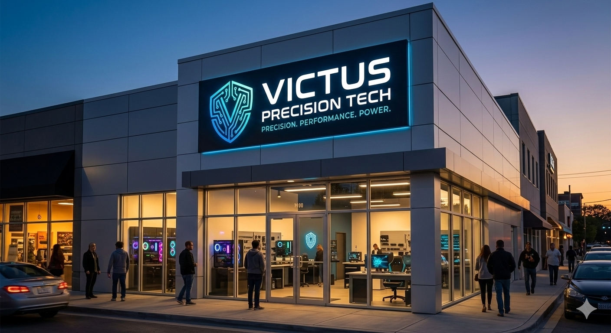

VICTUS PRECISION TECH nos encontramos hubicados en:
6ta aveniza 2-29 zona 1 Ayutla, San Marcos Guatemala

La historia de Victus Precision Tech no nació en una oficina, sino en un escritorio compartido en Ayutla, San Marcos. Todo comenzó cuando Enmanuel Hernández, un joven entusiasta de la tecnología, recibió su primera computadora de manos de su hermano mayor, Juan José. Ese equipo no era solo una máquina; fue la puerta de entrada a un mundo de circuitos y posibilidades. Lo que para otros era un simple pasatiempo, para Enmanuel se convirtió en una obsesión por entender cómo funcionaba cada componente.
Durante sus estudios en el Liceo Ayutleco, Enmanuel decidió que no bastaba con usar la tecnología; había que dominarla. Fue en este periodo donde la disciplina del entrenamiento de alta intensidad y el rigor académico se fusionaron. Inspirado por la filosofía de la eficiencia máxima, comenzó a experimentar con la optimización de sistemas críticos.
El momento clave ocurrió con el proyecto de una HP Victus, donde la aplicación de técnicas avanzadas de gestión térmica y actualización de hardware demostraron que el rendimiento extremo era posible con la técnica adecuada. La voz se corrió entre sus compañeros y conocidos: si alguien en San Marcos necesitaba que su equipo rindiera como nuevo, Enmanuel era la persona indicada.
Con la visión clara de profesionalizar el soporte técnico en la región, nace oficialmente Victus Precision Tech. La empresa se fundó bajo la premisa de que el hardware de alto rendimiento requiere un cuidado de "precisión atlética". Lo que empezó como un proyecto escolar de emprendimiento se transformó en un centro técnico especializado que atiende a la creciente comunidad de gamers y profesionales de sistemas en la frontera.
Hoy, Victus Precision Tech no es solo un taller de reparaciones; es un símbolo de superación y excelencia técnica. Con la mirada puesta en la Universidad de San Carlos (USAC) y la ingeniería de sistemas, la empresa sigue evolucionando, integrando valores de disciplina, transparencia y potencia en cada tornillo que ajusta y cada código que escribe.